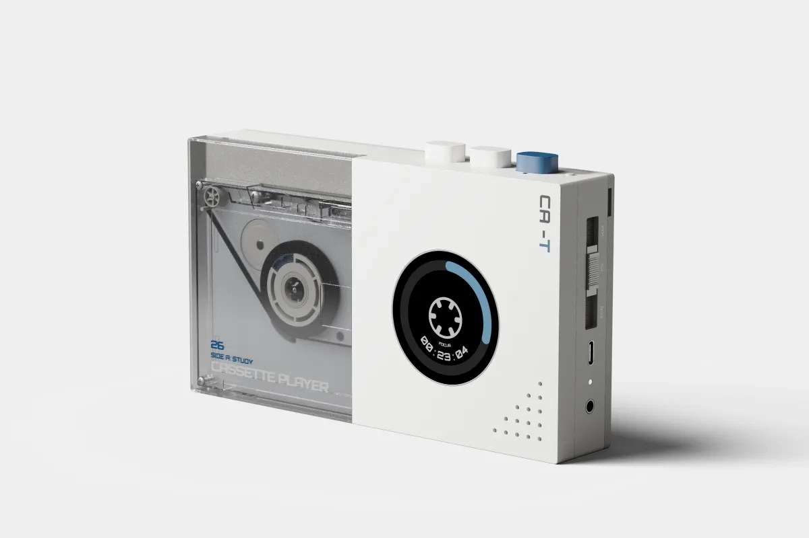
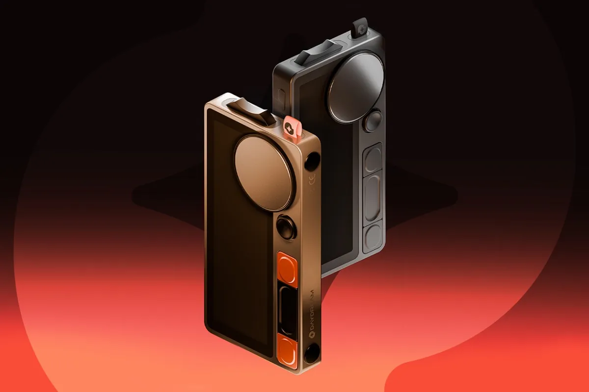
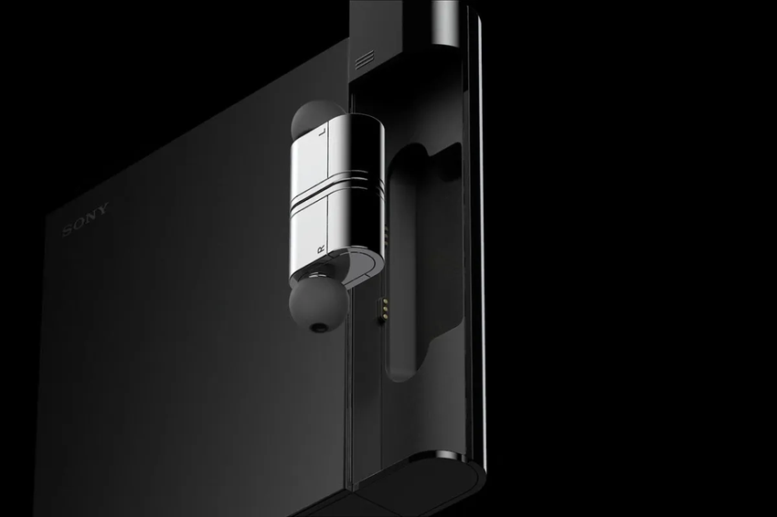
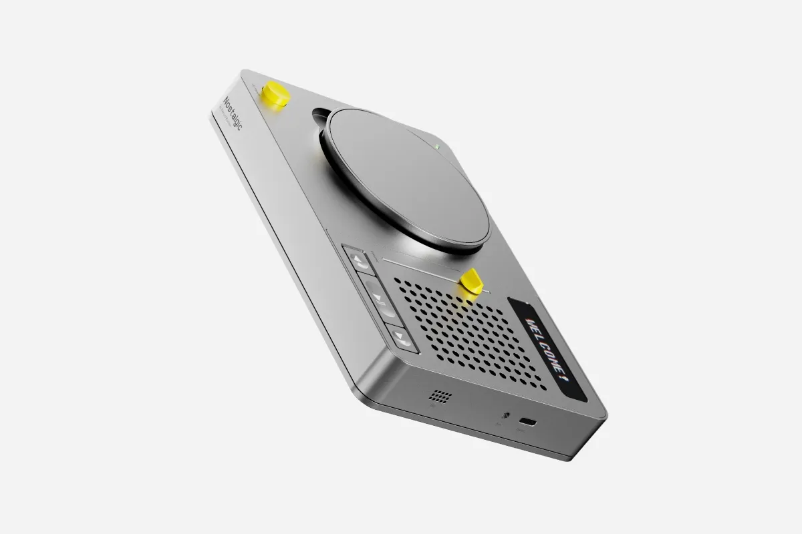
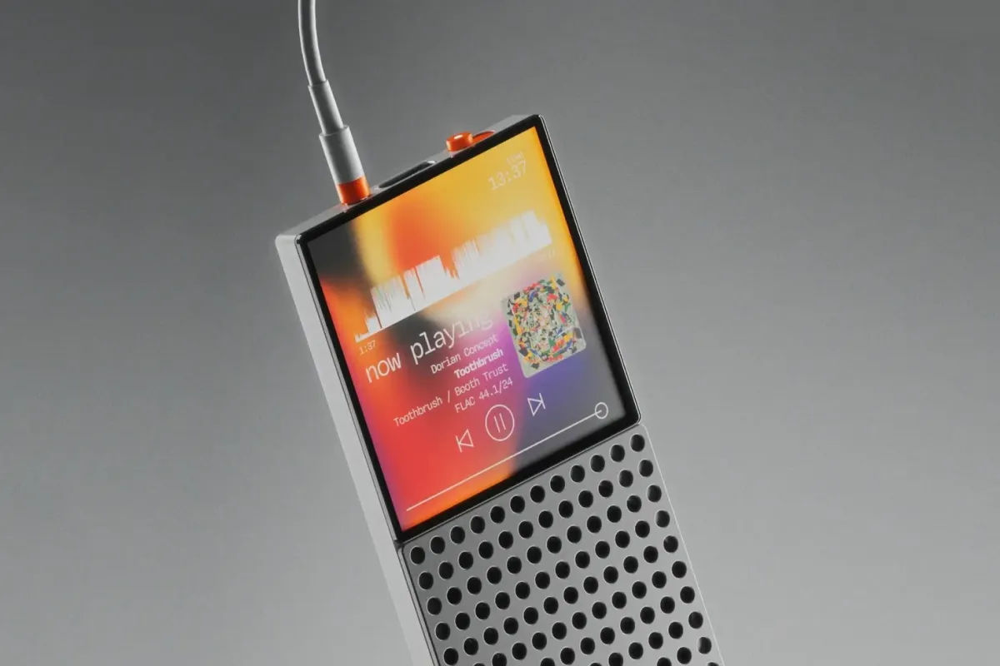
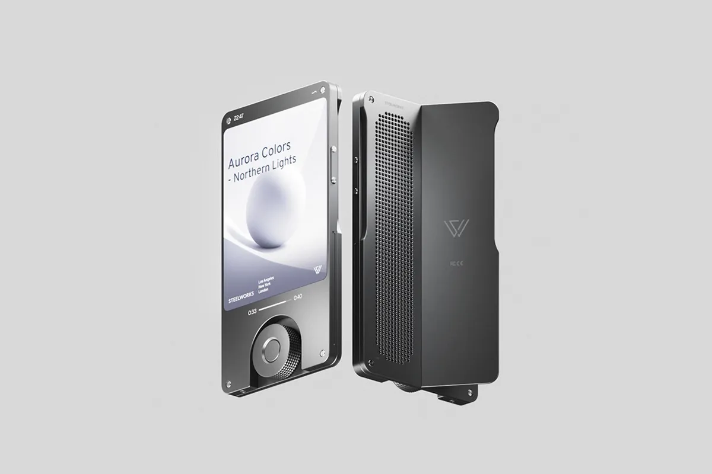

TF–0101 / 04

ARCHIVE PLAYER
Magnetic playback / precision dial
01 Objects for listening
Physical music objects for people who still believe listening should have weight, texture and a beginning.

[ 01 — INTENT ]
A small rebellion against invisible sound.
Streaming made everything available. It also made music disappear. Toneform brings it back into the room through controls you can feel, mechanisms you can see, and materials that age honestly.
Our design system[ 02 — THE OBJECTS ]
Four instruments. One shared language of direct, deliberate control.

CNC ALUMINIUM SERVICEABLE CORE MAGNETIC I/O[ 03 — THE SYSTEM ]
Every Toneform object is assembled around a serviceable core. Fasteners remain visible. Controls say what they do. Parts can be repaired, replaced and passed on.
[ 04 — DETAILS ]



“THE BEST INTERFACE
IS THE ONE YOUR HAND
REMEMBERS.”
[ FIRST PRODUCTION RUN ]
Join the list for prototypes, field notes and priority access to Archive Series 01. No noise. Only signal.